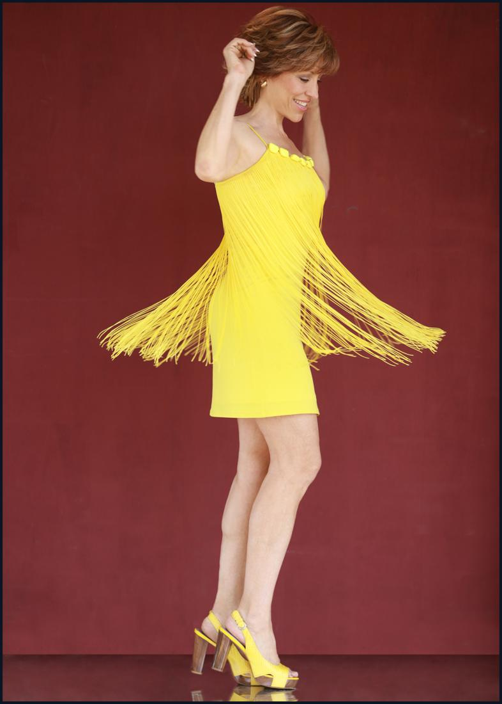
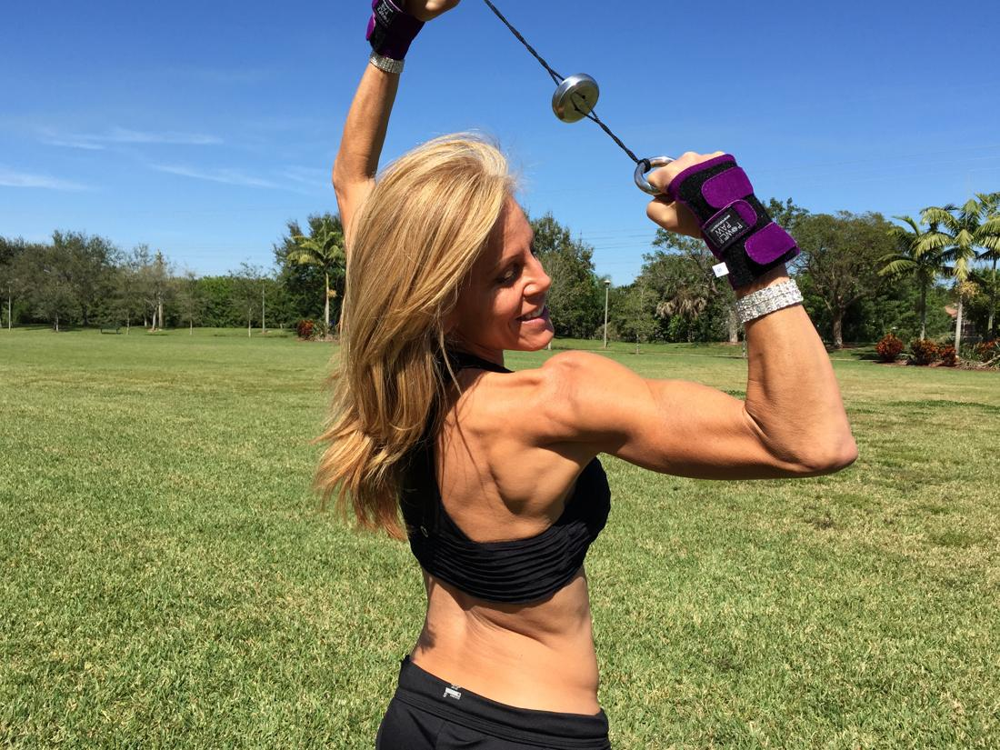

Q & A with Forbes Riley – on Business, Health, Fitness & Life
Q & A with Forbes Riley written Andy Charalambous
Profession: TV Host, CEO SpinGym, author, speaker, actress
Honors & Awards: National Fitness Hall of Fame 2010, Moxie Award Winner “Best Female Presenter of the Year (2x), “Best Home Home Shopping Presenter”, TeleAward Winner, Miss Teenage NY/America
Certifications: Personal Fitness Trainer IFTA, AFFA; Licensed Massage Therapist, Licensed Hypnotist, Certified NLP Master, Brown Belt Tae Kwon Do
··········
What are you known for professionally? As the 2010 National Fitness Hall of Fame inductee I am most known for being a leading authority in the health, fitness and wellness industry. I am most known for selling more than $2 Billion dollars worth of health & fitness products on TV via infomercials and Live Home Shopping (HSN & QVC).
I am most recognized from hosting the Jack LaLanne Power Juicer that aired for 8 years in 80 countries and the Montel Williams HealthMaster Blender for the past 6 years. I am also known for creating the fitness sensation SpinGym – the most unique, innovative and portable fitness product. When I launched it on the Discovery TV series PitchMen I was told it would never work and I was wasting my time – we have gone on to sell more than 600,000 SpinGyms in just 3 years. Professionally I am the health and wellness Martha Stewart!
······
Tell us about how you got into your line of work. I worked an actress on TV and movies (Fox’s 24, The Practice, Picket Fences and the lead role in Fox’s Fashion House) and a TV host (ESPN’s The X-Games, my own daily talk show on TLC –Essentials etc) My daily job however was to promote health and fitness products on home shopping – I have been doing it for more than 20 years. I was overweight and ridiculed most of my life in spite of my “success” and decided that after I figured out my own personal body issues that I could inspire others to get fit, happy and healthy.
······
How long have you been doing what you do? I began working on stage since my early 20’s (I worked on Broadway with Christopher Reeve, Bob Fosse and more) all the while fighting a weight issue. I have acted in more than 30 TV and film projects – so the short answer is my whole life!! I changed direction and began helping others transform their bodies shortly after 9/11 – I had the chance to personally survive the tragedy and have been working on this reinvention of my mission since then.
······
What do you enjoy most about what you do? Helping others. There is amazing joy watching someone come into their own, gaining confidence, and getting not only the body they’ve always dreamed of but they life they didn’t even know was waiting for them!
······
What are you most passionate about professionally? What most excites you about your work & the contribution you can make? I am most passionate about building the fitness sensation SpinGym – I have created a product that gets people in wheelchairs easily get cardio, helps women who hate their arms and find embarrassing bingo wings keeping them from enjoying their lives to giving hope to people who can’t get to the gym. I am excited to have struggled as hard as I did and make the journey to health and fitness so much easier for everyone else!
······
What’s the single most important reason for your success? A crazy desire to help others and being in front of the camera – just LOVE what I do!!
······
What do you consider to be your greatest achievement?
Getting SpinGym from a product “no one wanted” to become an international fitness sensation. I own the company 100% and it’s all my heart and soul in the creation and execution of this dream.
······
How do you think women have changed over the years? Regarding business, sports and fitness.
There is definitely a large crack in the glass ceiling. In sports women have made amazing strides in competition and our superstars like Serena Williams, Mia Hamm, Gaby Reese – both as athletes and role models. In business it still seems like a struggle to get equal pay, to get noticed for your work not how you look, but we continue to move forward.

What is the number one thing you like best about being into fitness?Truly nothing tastes as good as fit feels. Most of my life I struggle with an extra 30 pounds and it was just frustrating – I tried all the popular fad diets – would lose the weight and gain back even more – finally understanding the truth about food, nutrition, exercise, and balance has changed EVERYTHING about me as a person. I am more confident, I enjoy clothes, I enjoy being a mom – and at 53 with 10 year old twins that could have been a struggle – but I am stronger, fitter and healthier than most of the other 4th grade moms – and they are younger than me!······
Is there anything wrong with wanting to portray women athletes, actors, etc as feminine and physically attractive? I love looking at strong fit bodies but I am not a fan of women who overdo it. Female body builders can push that masculine line a bit too far with the desire for big sculpted bodies. I am a fan of athletic, agile, fit, and toned bodies. Feminine and attractive are admirable qualities for women – we should enjoy them and of course use them to our benefit
······
How do you deal with cravings for junk foods, sweets and salty food? That is what has changed as I’ve gotten older. I have better balanced nutrition – eat more raw, organic foods, use spices and have noticed that I don’t have the crazy cravings I had in my 20’s and 30’s. I don’t believe in junk food as I value my energy – would you put water in your car’s gas tank and expect it to run at top quality! I do enjoy my chocolate and some sweet – but everything in moderation. When you eat clean 80 percent of the time – you can indulge 20 percent and still stay on target!
Describe a typical day for you, starting from the moment you wake up in the morning. Kiss my twins and get them ready for school – prepare all of us a nutritious lunch with protein veggies etc – start our day with a powerpacked protein smoothie. Get in a quick workout – always SpinGym (at least 3 times a day for 5 minutes minimum) – then there is NO typical day – some days on I’m set shooting a TV show or live on HSN – some days I have photo shoots, video workouts, magazine interviews – then there’s writing, email, facebook and phone calls – did I mention there’s no typical day.
······
Health & Fitness Questions
What sports do you participated in for fun?
I love to ski, scuba dive, play tennis, go hiking, biking, roller skating with the kids, volleyball on the beach, swimming – everything except golf – I plan to learn when I slow down in my 70’s.
······
Please describe your normal diet. What do you eat in a ty pical day to stay in shape? Avocado, chicken, lettuce, watermelon, lemons, ginger, sweet potato, pineapple, coconut water, green beans, all kinds of seafood, hummus, tomatoes, celery, carrots, beets, garlic, olives, spinach and kale. So making juices and smoothies really helps getting all the fruits and veggies you need daily
pical day to stay in shape? Avocado, chicken, lettuce, watermelon, lemons, ginger, sweet potato, pineapple, coconut water, green beans, all kinds of seafood, hummus, tomatoes, celery, carrots, beets, garlic, olives, spinach and kale. So making juices and smoothies really helps getting all the fruits and veggies you need daily
······
What is the most challenging thing you deal with about consistently staying in top shape? Balancing working out with work and life – that’s why I’m such a fan of my on the go SpinGym workouts.
······
What type of exercises do you include in your routine to stay in shape?SpinGym EVERYDAY – 5 minutes to 30 minutes 3 to 4 times a day – has toned my arms, abs, core and I’m the smallest dress size I have EVER been: http://BuySpinGym.com
······
A total beginner is about 35 pounds overweight. She doesn’t really know where to start. What tips can you give her to follow the right track?
1. Keep a journal – when you get honest with what you eat – everything changes – you know more about good eating than your realize – and I just launched a new motivating journal called e.a.t. – a journal for what you eat and for what’s eating you
2. Start your day with a shot of apple cider vinegar followed by a big glass of water with lemon.
3. SpinGym 3 times a day for ONLY 5 minutes at a time – boost your stubborn, sluggish metabolism. You will double your heart rate in less than a minute and start to become a fat burning machine not a fat storing machine.
4. Drink a healthy green super food drink and get your ph back in balance.
Find a buddy – accountability is very motivating! I recommend joining my community at www.fitwithforbes.com – I have 20 hours of education tips on food, nutrition, diet, exercise and so much more – you need good information – not fads!
······
What tips do you recommend for eating out at restaurants to make sure we don’t gain too much weight/fat?
Easy – there’s ALWAYS great food at a restaurant but:
1. Don’t let them put the bread on the table
2. Ask for water, when they try to push pre-dinner cocktails
3. Order dressing on the side, same with any sauces – YOU need to portion it out – the chef is not there to keep you skinning
4. Ask for broiled fish, chicken or meat – nothing fried –
Let your dessert be a hot cup of green tea!
······
What are your top tips for developing toned and defined arms? Specific exercises, diet advice, etc.

For arms – there’s only 1 thing I recommend – www.SpinGym.com tightens tones fast and deeper than resistance bands or dumbbells – my DVD routines are designed to sculpt not bulk!······
What are your top tips for losing unwanted body fat? Specific exercises, diet advice, etc.
Amp up your metabolism – with clean eating and short burst exercises throughout the day.
What are your top tips for staying motivated on a fitness plan? Follow www.FitwithForbes.com — why – because I offer mental motivation – physical is only a small part, but cracking the mindset of what is holding you back is the key to all your success in life.
······
What is your training routine like? Please include a few details. Honestly the best is to turn on the music (in my house, iPod) and just DANCE!
······
What is the best way to get started in your industry? I am professional TV host who also markets on TV. To get to my position you need to train in speech, presenting, improve, and perhaps a bit of acting – I run a workshop 2 times a year in Tampa to coach people who dream of hosting on HSN/QVC, an infomercial, TV shows like EXTRA and ET, newscasters and more.
······
What is the best way towards becoming a personal trainer?
You have to love fitness and people – so many certifications and conventions around the country.
······
Have you suffered any injuries? What injuries? I torn my left knee’s ACL in a skiing accident in the 30’s and had replacement surgery – worst year of my life – rehab was insanely painful, constant having to break up scar tissues and learn to us my leg again.
Thanks to SpinGym (which you may have only thought was upper body) I have conditioned my quad and hamstrings better than they have EVER been.
······
Isn’t it hard to stay fit? How do you manage that?!
Hard to do anything is a mindset. It’s just a part of my happiness to be fit so I workout daily, eat clean, hang out with positive people and stay focused on the dream.
······
Business Questions
What is the most difficult part of starting your business? Having people believe in you.
······
What do you consider to be success as a business owner or entrepreneur? Making positive impact on people’s lives and having them understand and achieve a new level of happiness. Financially to take care of all those around me from family to employees.
······
What’s your least favorite part about being a business owner or entrepreneur? You are always responsible for everything – the smartest thing you can learn to do is delegate, surround yourself with smart, capable people and trust.
······
What’s the biggest thing you struggle with as a business owner or entrepreneur? Staying focused – as a mom I want to run off and play with the kids, fool around on facebook – it’s hard when you’re the boss – but I also would NEVER change it!
······
How do you think running a business or being an entrepreneur has made you a better person? I am more compassionate, patient and committed to helping others.
······
What’s unique about the service that you provide? My company and mission is “whole body” – I don’t JUST offer a fitness product but a lifestyle solution.
······
Do you have any of your own branded products? If so, what are they? SpinGym is the most amazing fitness training product – portable, compact but more effective and toning, tighting and burning calories that almost anything on the market – PLUS you don’t have to be in the gym to do it. I also offer amazing transformational coaching that has not only changed people’s bodies but inspired them to become millionaires. I take inventors products onto a TV platform from infomercials to home shopping and SO MUCH MORE – my masterminds and coaching are second to none!
······
Mixed Questions
If you could be any character in fiction, who would you be?
Obi Wan Kanobi or James Bond.
······
What things do you believe differentiates you from your contemporaries?
I am the health and wellness Martha Stewart – with creative innovative products and solutions to make you life better, happier and healthier.
······
Who has been the biggest influence on your life? What lessons did that person teach you?
Meeting Jack Lalanne and spending more than 8 years working alongside him has been my greatest influence – he was sold health, food and exercise conscious mixed with being a smart entrepreneur and a family man – a hero on every level.
······
If you could paint a picture of any scenery you’ve seen before, what would you paint?
The mystery of Lake Powell – amazing mountains with pristine water – it was unearthly looking – another was the 2000 ft sea wall behind the water off of Turks and Caicos – the most beautiful colored water, a rainbow of fish and sea life mixed with plants – like being INSIDE a magical fish tank!
······
What are some goals you are still trying to accomplish?
To get back on National TV with a studio audience devoted to health and wellness – like Rachel Ray, Dr. Oz and Martha Stewart.
······
What are the most important lessons you’ve learned in life?
To dream bigger than you ever imagined and enjoy the results – the Law of Attraction works miracles.
······
What are you proudest of in your life?
That I have healthy, smart, ingenious 10 year old children (twins) They are at an age where they model their parents and it keeps me on my game. They will say the most amazing things but daily my inspiration is as simple as “mommy, I love you – you are the best – can we cuddle!”
······
How do you set your goals?
Start at my memorial and work backwards.
······
What else would you do if you weren’t in your current line of work?
Can not even imagine why I would do anything else.
······
Do you believe in the Law of Attraction?
It IS my religion.
······
What would we find in your refrigerator right now?
Almond milk, pineapple, watermelon, ice tea, white wine, broccoli, lettuce, carrots, cucumber, beets, garlic, ginger, onions, frozen grapes, apple cider vinegar.
······
If you had the opportunity to get a message across to a large group of people what would your message be?
Dream it, believe it, achieve it!
······
Where do you see yourself in 5 years?
Everywhere! From TV to magazines, movies, radio and more
······
What are you best at?
Inspiring others.
······
What books do you like to read?
Motivational, inspiring stories, business books and the occasional rag magazine you find in the grocery store – love pop culture and dichotomy.
······
What is your favorite type of music?
The full gamut – music is my lifeblood and the backdrop to my days and nights – from romantic to rock n roll – I stretch to music in the morning – workout to cranking beats, then love to dance at night – from classical to rap and everything in between.
······
Describe your parents, what are they like?
They were married for 40 years – loved me so much, so supportive and I am the luckiest kid ever to have known them.
······
What were your dreams as a child and did you achieve any of them?
To dance with Fred Astaire – and I did as a guest at the 50th annual academy awards in Los Angeles!
······
Tell us a time in your life that was a time you’ll never forget?
Working at club med in my 20’s – I worked all around the world, scuba dived in amazing places, learn to ski, speak French, create shows – it was so carefree yet FILLED with adventures.
······
What things do you find yourself doing that you said you’d never do?
Taxes.
······
What are some qualities that you value in a person?
Humor, passion, commitment, focus, vision, integrity, compassion, joy.
······
Name 5 of your favorite movies.
Starman, The Year of Living Dangerously, Butch Cassidy and the Sundance kid, Roman Holiday, West Side Story – and 5000 more – I love my movies! Can’t forget James Bond flicks, all of Steven Spielberg and Hitchcock! And my favourite: Splatter University because I star in it back in my early 20’s – todays it’s a classic cult – go figure!
······
What TV shows do you like?
Child of the 60’s : Man from Uncle, Betwitched, The Monkees, Partridge Family, and It Takes a Thief Today: Revenge, Desperate Housewives, Falling Skies, 20/20, Dancing with the Stars.
······
What do you enjoy doing on a Sunday afternoon?
Kids, park, rollerskating, movies, jet skiing, bike riding, and every once in a while just sleeping in.
······
You are stranded in the Amazon rain forest. What 3 items would you want to have with you and why?
A really talented tour guide – I failed survival class so he would come in handy. My iphone – great photos, videos and perhaps if I could get a signal I wouldn’t be stranded and a SpinGym – go for staying fit and warding off dangerous creature (you can hit them!).
······
Is there anything in particular that you wish you could do over? What is it?
My 5th grade math class – only “B” I ever got!
······
What personality traits in your mind are best suited for your job, career, etc?
Quick wit, gift of gab and a crazy sense of curiosity and mischief.
······
What is your favorite drink?
Fresh brewed iced tea black or green over ice!
······
What is your favorite color?
Hot Pink.
······
Name a movie that touched you in some way.
Sophie’s Choice – I am a mom of 2 and the thought that anyone would have to choose would have driven me insane as well – I get physically ill at just the thought of that!
······
When in life have you felt most alone? Why?
At my mom’s funeral – my dad has also recently passed away and the thought of being orphaned and missing my best friends for the rest of my life was overwhelming – it has taken years to grieve and every once in a while I will still just cry cause I want my mommy!
······
What would be impossible for you to give up?
The need to get exciting new products in people’s hand – I’m relentless but I love it!
······
Why would someone not want to work with you?
Because I work at 110% and demand that of everyone around me – you to be driven and passionate to want to work with me – but I also play hard and love to have fun – if you don’t see the magic in life – you won’t be able to hang wit me!
······
What activities did you enjoy in school?
Loved being in the theatre, was an A+ student who skipped a year of high school and graduated college in 3 years with 2 degrees.
······
What kind of child were you?
Young.
······
If you could be a superhero, what would you want your superpowers to be?
To be invisible at will.
······
How do you want to be remembered?
As a passionate, energetic role model for women who was also a kickass mom!
······
What is one of your favorite quotes?
Leap and the net will appear. You are the sum of the obstacles you overcome.
······
What chore do you absolutely hate doing?
Laundry.
······
What is your best feature?
My smile – after 8 years of braces – I am proud to show off my teeth – but I just genuinely love life and get great compliments on my smile – it comes from the heart!
······
What was the last experience that made you a stronger person?
On March 20th 2013 I almost died in a NYC hospital 2000 miles from home when a huge kidney stone (my first ever) blocked my tubes, my blood was septic, I had emergency surgery and they weren’t sure I would make it – 4 ½ days later – I was out of the woods – but more grateful than ever to see my family and get back to my mission!
······
What makes you uncomfortable, besides these questions?
Sitting on long plane flights – so fidgety and the seats are NEVER that comfortable – I fly 2 to 4 times a month – and the TSA, security, screening – really!!??
······
If you could change something physical about yourself, what would it be and why?
I’d have bright blue eyes like my son!
······
Besides money, what are your favorite ways to compensate people?
SpinGyms – oh you saw that coming – okay – gift cards.
······
When was the last time you tried something new?
We just started raising chickens at home – seriously something new – but loving the fresh eggs – they are blue – you heard of green eggs and ham – I gotcha beat.
······
How would you describe yourself in three words?
Energetic, passionate, relentless.
······
What is one thing you are not?
Male.
······
Do you think crying is a sign of weakness or strength?
Yes.
······
What makes you angry?
Close mindedness.
······
What makes you laugh?
My children (daily), great comedians (love jokes) and taking life too seriously – it makes me laugh a lot.
······
What are you afraid of?
Aside from these questions never ending – sharks – I live on the water – Tampa Bay is infested with sharks – makes water skiing with kids freaky.
······
What would be the first thing you would do if today was your last day?
Eat a HUGE container of Hagen Daz vanilla ice and kiss my kids till my lips fell off!
······
What’s your vision of a perfect society?
Blurry.
······
What’s something you check daily?
Facebook – committed to my virtual world – love it – then emails – don’t really love them but a necessary evil.
······
Are you an emotional person?
In every way imaginable.
······
What’s your own definition of happiness?
Inner peace, knowing everyone in my life is happy/healthy and that I’ve done something to inspire someone. Happiness is a simple state of enjoying the moment – no worries.
······
Which famous person would you like to interview and which questions would you ask him/her?
Joseph Pilates – the godfather of creative, innovative fitness. How did he come to such profound knowledge of the human body and I’d love to show him just HOW popular his dream became because during his lifetime he could never had imagined such global success – its what gives me hope about what I’m doing!
······
If you could choose to be born with a particular natural skill what skill would it be?
I so wish I could sing~ to stand on a stage in front of 10’s of 1000’s like Beyonce, JLO, Tina Turner and just entertain with your voice – I just can’t carry a tune and do NOT ask me to karaoke!!
······
What advice would you give someone who wanted to do what you do?
Read my book – its way too complicated for here – lots of skill, timing, luck, passion with a dose of not living in the real world!! It’s the reason I offer private coaching – I can get someone to achieve THEIR inner greatness and success but like any accomplished world class athlete do NOT expect to do it without a coach.
······
While you are watching TV in your home a penguin walks through the door wearing a sheriff’s hat and badge. What does he say?
Stop drinking those double tequila margaritas because you’re seeing a penguin in a sheriff’s hat and badge.
······
Do you have any secrets you want to share with the few of us reading this? We won’t say anything….promise!
Then it wouldn’t be a secret then would it! But here goes – in my 20’s I delivered singing and stripping telegrams – true story!
······
Are there any words of wisdom you’d like to pass along to us?
Dare to dream~ and dream bigger than you imagine possible!
······
11.
Save